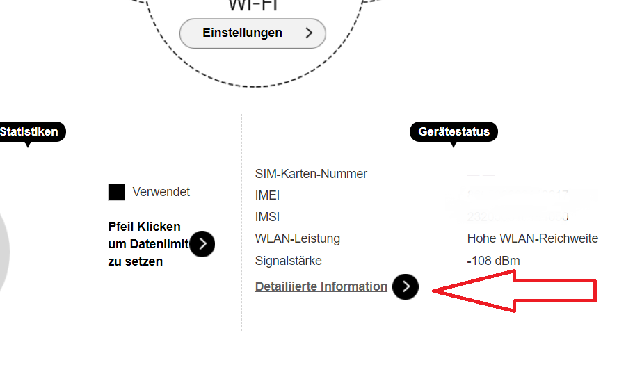
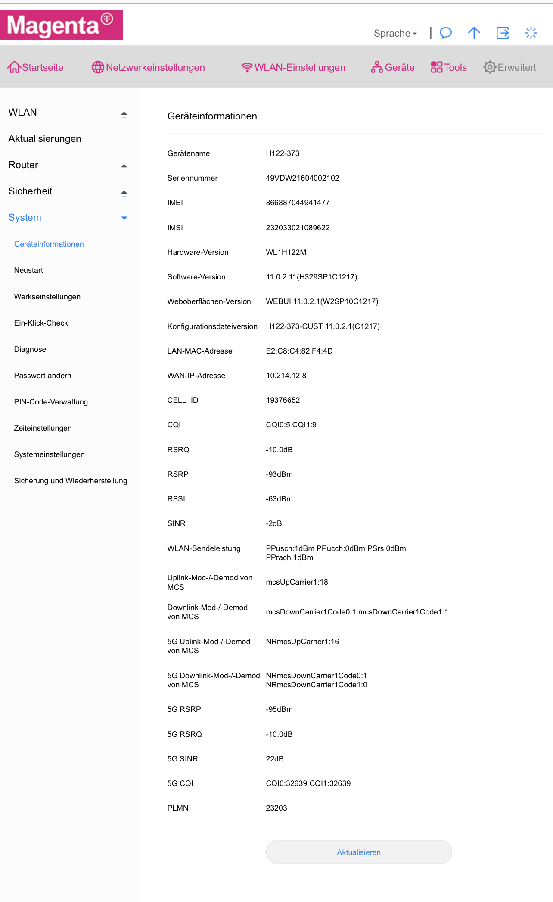

{kind=link}
{kind=link}
{kind=link}
{kind=link}
5G ist jetzt deutlich besser!

Wie sieht der PING aus?
Hallo Leute
ich habe den neuen 5G Router von magenta und würde gerne meine NAT typ ändern bzw. eine Lösung finden für das Problem mit dem hohen Ping(Latenz) den ich teilweise habe
Bzw dürfte irgendwas mit mei en UpNP nicht passen zeigt mir meine Konsole an
bitte um Hilfe
Lg
Wie hoch ist denn deine Latenz?
Immer zwischen 70-180
und manchmal ist sie ganz hoch auf 999
Das klingt aber nach einem Problem beim Signal.
Wie sehen denn die Empfangsparameter aus? Kannst du mal was posten?
Findest du i.d.R. im Routermenü.
Meinst du die Empfangsparameter vom Router
oder von der Konsole ?
Vom Router bitte.
4G 75% und 5G 92%
OK mehr hast nicht?
Sowas wie RSRP, SINR oder so?
Wo bekomme ich das alles her ?
Im webinterface (192.168.01) findest du diese Werte.
Hab ich versucht bin aber leider nicht fündig geworden 😬😬
Habe jetzt meinen alten ZTE Router(MF-17T) in Betrieb genommen. Unter "Detail Informationen" sollten die nötigen Daten stehen.

Ja genau - ist meistens etwas versteckt. Die Werte wären aber wichtig, weil da sieht man im Detail, wie das Signal rein kommt und ob ggfs. Störungen/Überlagerungen u.s.w. vorliegen.
Bei mir sieht das so aus und ich finde nirgends detaillierte Informationen um ehrlich zu sein 😬
muss zugeben bin auch nicht wirklich der Profi was sowas betrifft
Ich glaube ich bin fündig geworden wenn das das richtige ist
vielleicht ist es auch noch wichtig das im Haushalt noch ein A1 Router läuft und es mit d
zusammen hängt ?
OK super!
4G Empfang ist sehr schlecht - da glaub ich schon, dass da nicht viel rüber kommt. Bei 5 G sieht es deutlich besser aus.
4G hat hohe Störungen - teils sogar mit Ausfall.
5G ist OK - ich denke aber bei dir wäre mal ein Test interessant, wenn du den Router auf das Fensterbrett nach draußen stellst und wieder einen Test machst.
Ggfs. auch andere andere Himmelsrichtungen testen und den Router drehen.
Dann vor allem wieder auf die Empfangsparameter achten - RSRP sollte keiner werden, SINR auf jeden Fall in den positiven Bereich und je höher desto besser.
Ja 4g geht generell nicht wirklich gut bei mir deswegen auch den 5G Tarif mit Router
was kann ich machen das ich meinen nat Typ ändere ?
hab da nur zwei Auswahlfelder und bin immer auf strickt
Bzw soll ich irgendwas beachten wenn ein 2 Router eines anderen Anbieters im Haus ist?
Gerade eben schrieb Rick:Bzw soll ich irgendwas beachten wenn ein 2 Router eines anderen Anbieters im Haus ist?
Nein - das sollte kein Problem sein.
Ist der A1 Router ein 4G Router?
Ja ist ein 4g Router
OK.
Ich glaub nicht aber der Test wäre ja einfach. Schalt den A1 Router mal ab und schau, ob sich beim Magenta Router was zum Positiven ändert.
Würde man bei diesen Werten einen Unterschied kennen ?
bzw wo müsste ich hin bei den Werten um gute Ergebnisse zu haben ?
Schau mal sowohl bei 4G, als auch bei 5G die Werte RSRP und SINR an.
Und poste sie, wenn der A1 Router off ist
Das sind die besten werte dich hinbekomme
wobei mir das untere 5G nicht immer angezeigt wird ?
woran liegt das ?

5G ist jetzt deutlich besser!

Wie sieht der PING aus?
Nein Sorry falsch.
Ich hatte das falsche Bild.
Genau umgekehrt ist es.
Die Werte sind sowohl bei 4G, als auch bei 5G schlechter geworden.
Also ist der Sender wohl auf der anderen Seite des Hauses....
Hallo Leute
ich habe den neuen 5G Router von magenta und würde gerne meine NAT typ ändern bzw. eine Lösung finden für das Problem mit dem hohen Ping(Latenz) den ich teilweise habe
Bzw dürfte irgendwas mit mei en UpNP nicht passen zeigt mir meine Konsole an
bitte um Hilfe
Lg
Das sind denke ich jetzt die besten Werte an meinem Standort was ich bekommen kann
den Ping beim Speed Test bin ich zwischen 19-25 ms aber wie es Ingame aussieht kann ich noch nicht sagen weil der Ping war beim Speedtest davor auch das selbe nur ingame hald Katastrophe
Ja das sieht ganz gut aus jetzt...
Ping auch ziemlich gut.
Wie ist die Speed bei dir?
Bzgl. NAT muss aber wer anderer helfen, da kenn ich mich bei diesem Router zu wenig aus.
Aber die Daten ansich sind mal OK, da ist kein Handlungsbedarf mehr,
Vielleicht kannst du mir beim letzten Bild noch bestätigen ob das gute Werte sind ?
Lg
Das sind nicht nur gute Werte, das sind Traumwerte.
SINR über 30 - hab ich so noch nicht gesehen - praktisch störungsfrei!
Ja jetzt bin ich zufrieden - das ist Top!!!!!!!!!
{kind=link}
{kind=link}